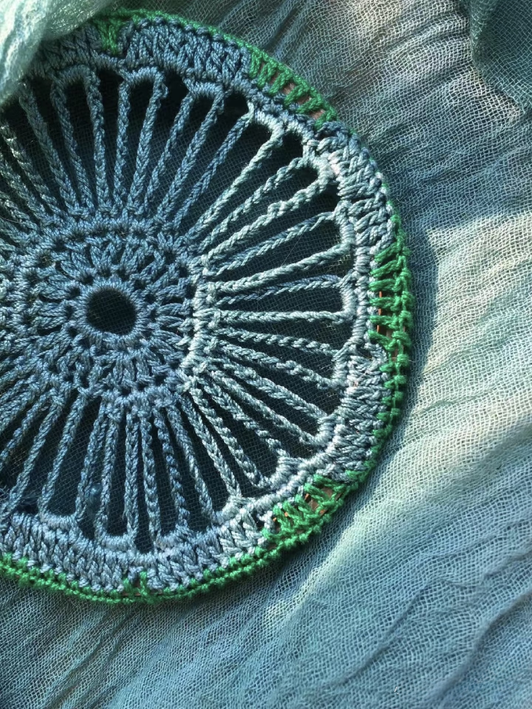

Weaving a Future
Xiaohong always dreamed of giving back to her village. After years of working away from home, she returned with a vision: to create a weaving cooperative where mothers could earn a living without leaving their families. Starting with just a couple of looms and her own skills, she invited women from surrounding farms to learn. Many were hesitant at first, but Xiaohong’s patience and encouragement helped them master the basics. Soon the cooperative began producing beautiful woven products sold both locally and online. As orders grew, more women joined, bringing laughter and camaraderie back into the community. For Xiaohong, success was not only measured in income but in the smiles of mothers who could now support their children’s education and stay close to home. Her weaving cooperative has become a beacon of hope, proving that when women support each other, they can weave a new life together.